Under the Hood
Comprendre ce qui se passe à l'intérieur de `.fit()` : la descente de gradient, les différents solvers, et les fonctions de perte utilisées en régression et en classification.
Comprendre ce qui se passe à l'intérieur de .fit() : la descente de gradient, les différents solvers, et les fonctions de perte utilisées en régression et en classification.
📋 Cheatsheet — Under the Hood
Modèle linéaire et paramètres
from sklearn.linear_model import LinearRegression
model = LinearRegression()
model.fit(X_train, y_train) # minimise la loss OLS → trouve beta_0 et beta_1
model.intercept_ # beta_0 (biais)
model.coef_[0] # beta_1 (pente)Gradient Descent — implémentation manuelle (1D)
import numpy as np
b0 = 0 # initialisation aléatoire de l'intercept
b1 = 0.64 # pente connue (simplification)
eta = 0.1 # learning rate
def h(x, b0):
return b0 + b1 * x # hypothèse : prédiction ŷ
## Une epoch = un passage sur toutes les données
for epoch in range(100):
derivative = np.sum(-2 * (y - h(X, b0))) # dérivée partielle de SSR par rapport à b0
b0 = b0 - eta * derivative # mise à jour : b0 ← b0 - η * ∂L/∂b0SGD (Stochastic Gradient Descent) — 1 point à la fois
b0 = 0
eta = 0.1
n_epoch = 5
for epoch in range(n_epoch):
for i in np.random.permutation(len(X)): # ordre aléatoire des observations
X_mini = X[i] # 1 seul point (mini-batch de taille 1)
y_pred = h(X_mini, b0)
y_true = y[i]
derivative = -2 * (y_true - y_pred) # gradient sur 1 point
b0 = b0 - eta * derivative # mise à jour plus fréquente mais bruitéeSGDRegressor et SGDClassifier sklearn
from sklearn.linear_model import SGDRegressor, SGDClassifier, LinearRegression
LinearRegression() # OLS résolu par inversion matricielle (SVD)
SGDRegressor(loss='squared_error') # OLS résolu par SGD
SGDRegressor(loss='huber') # régression linéaire robuste aux outliers
SGDClassifier(loss='log_loss') # équivalent LogisticRegression (log-loss)
SGDClassifier(loss='hinge') # équivalent SVC (hinge loss)Fonctions de perte — Régression
SGDRegressor(loss='squared_error') # L2 = MSE : pénalise fortement les grandes erreurs
SGDRegressor(loss='absolute_error') # L1 = MAE : robuste aux outliers
SGDRegressor(loss='huber', epsilon=0.1) # mix L1/L2 : MSE si erreur < epsilon, MAE sinonFonctions de perte — Classification
SGDClassifier(loss='log_loss') # Log-Loss (Cross-Entropy) : pour classifieurs logistiques
SGDClassifier(loss='hinge') # Hinge Loss : pour SVM (Support Vector Machine)Comparaison de vitesse : LinearRegression vs SGDRegressor
from sklearn.datasets import make_regression
X, y = make_regression(n_samples=10000, n_features=1000) # grand dataset
LinearRegression().fit(X, y) # → ~2.07s (inversion matricielle = O(p³))
SGDRegressor().fit(X, y) # → ~0.19s (SGD = bien plus rapide sur grands p et n)⚠️ Récapitulatif — Erreurs clés à éviter
Confondre Loss Function et métrique de performance
❌ Utiliser l'accuracy comme loss pour entraîner un modèle → impossible, non dérivable
✅ La loss sert à fitter le modèle (doit être différentiable) ; les métriques (accuracy, R²) servent à évaluer après le fit
Choisir un learning rate trop grand ou trop petit
❌ eta = 10 → le modèle diverge et n'atteint jamais le minimum
✅ eta = 0.01 à 0.1 pour commencer ; surveiller la courbe de loss par epoch
Oublier de scaler les features avant le Gradient Descent
❌ Features non-scalées → paysage de loss très allongé → convergence très lente
✅ Toujours standardiser avant d'utiliser SGD : le GD converge beaucoup plus vite sur des features à échelles comparables
Utiliser LinearRegression sur un très grand dataset (n et p élevés)
❌ LinearRegression() sur 10 000 observations × 1 000 features → 8+ secondes (inversion matricielle = O(p³))
✅ SGDRegressor() sur le même dataset → ~0.19s : toujours préférer SGD quand n ou p est grand
Arrêter le SGD trop tôt ou trop tard
❌ Trop tôt → le modèle n'a pas convergé ; trop tard → overfitting ou temps perdu
✅ Utiliser max_iter et tol de sklearn, ou surveiller la perte par epoch manuellement
1) Ce qui se passe derrière .fit()
from sklearn.linear_model import LinearRegression
model = LinearRegression()
model.fit(data[['weight']], data['height'])
print('beta_0 (intercept) =', model.intercept_) # → 0.9434
print('beta_1 (slope) =', model.coef_[0]) # → 0.6220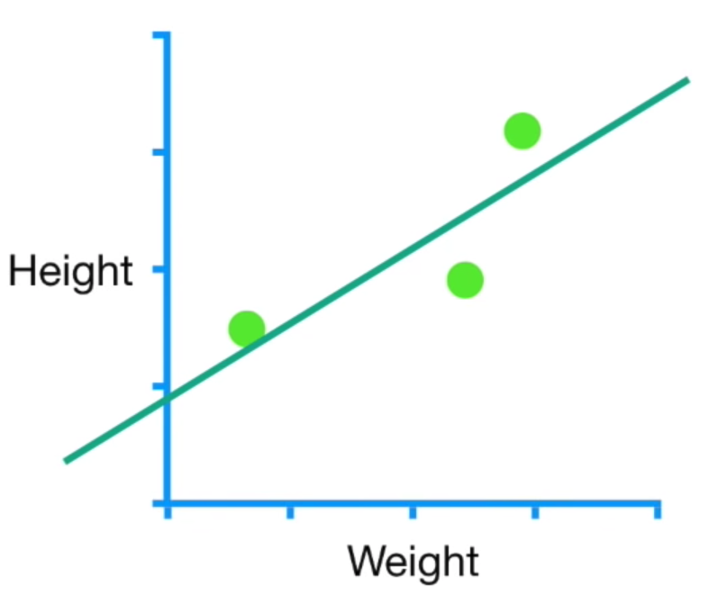
1.1 Le modèle comme hypothèse
Tout modèle ML peut s'écrire :
$y = h(X, \beta) + \text{error}$
- $h$ est la fonction d'hypothèse (ex: régression linéaire, sigmoïde…)
- $h(X, \beta) = \hat{y}$ est la prédiction
- Pour la régression linéaire : $h(X, \beta) = \beta_0 + \beta_1 X_1$
.fit() trouve les paramètres $\beta_0$ et $\beta_1$ qui minimisent la loss function.
1.2 La Loss Function
$\beta = \arg\min_{\beta} \ L(\beta, X, y, h)$
Pour OLS (Ordinary Least Squares) :
$L_{OLS} = \|\text{error}\|^2 = \|y - \beta_0 - \beta_1 X_1\|^2$
1.3 Intuition géométrique
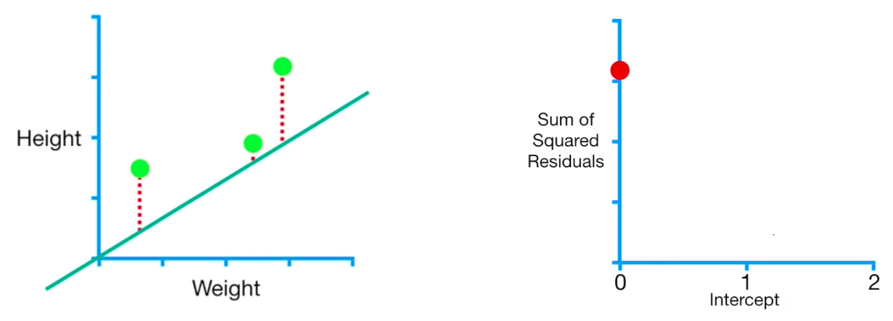
La loss function a une forme convexe — il existe un minimum global unique pour les modèles linéaires.
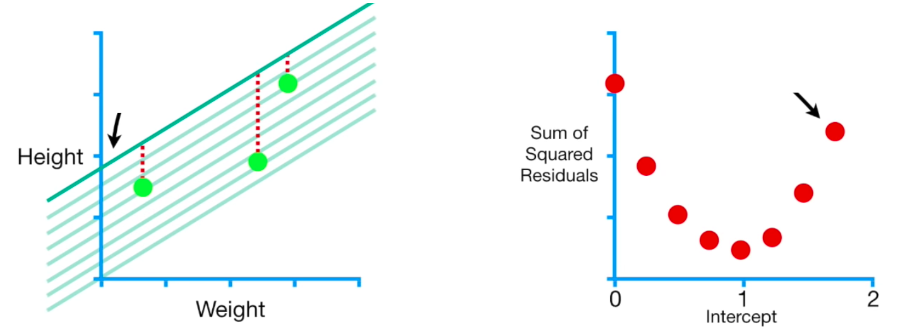
2) Gradient Descent
2.1 Descente 1D — Pas à pas
La descente de gradient utilise la pente (dérivée) de la loss comme indicateur de direction.
$\frac{\partial \text{Loss}}{\partial \text{paramètre}}$
Plus la pente est proche de zéro, plus on est proche du minimum.
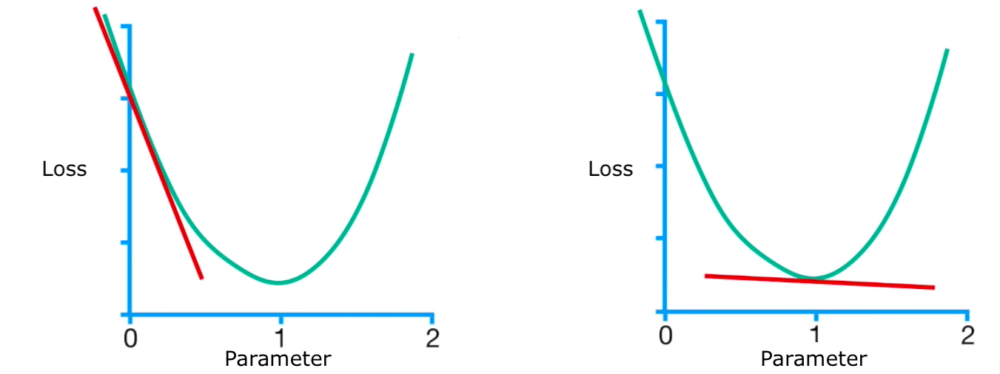
Algorithme — 1 paramètre :
$\beta_0^{(k+1)} = \beta_0^{(k)} - \eta \frac{\partial L}{\partial \beta_0}\left(\beta_0^{(k)}\right)$
- Initialiser $\beta_0^{(0)}$ aléatoirement (ex: 0)
- Calculer la dérivée de la loss en ce point
- Mettre à jour $\beta_0$ selon le learning rate $\eta$
- Répéter jusqu'au critère d'arrêt
Critères d'arrêt : taille de pas minimum (ex: 0.001) ou nombre max d'epochs (ex: 1000)
2.2 Implémentation manuelle (1D)
X = data['weight']
y = data['height']
b1 = 0.64 # pente supposée connue
eta = 0.1 # learning rate
def h(x, b0):
return b0 + b1 * x # hypothèse linéaire
b0 = 0 # initialisation de l'intercept
## Epoch 0
loss_0 = np.sum((y - h(X, b0)) ** 2) # SSR = 3.159
derivative = np.sum(-2 * (y - h(X, b0))) # ∂SSR/∂b0 = 5.448
b0 = b0 - eta * derivative # b0 → 0.545## Epoch 1
derivative = np.sum(-2 * (y - h(X, b0))) # nouvelle dérivée (plus petite)
b0 = b0 - eta * derivative # b0 → 0.763
## Répéter jusqu'à convergence...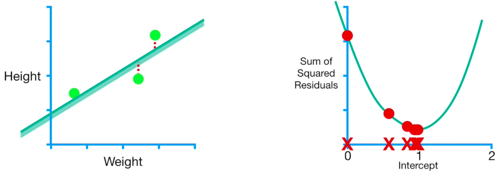
2.3 Descente 2D — Co-optimiser $\beta_0$ et $\beta_1$
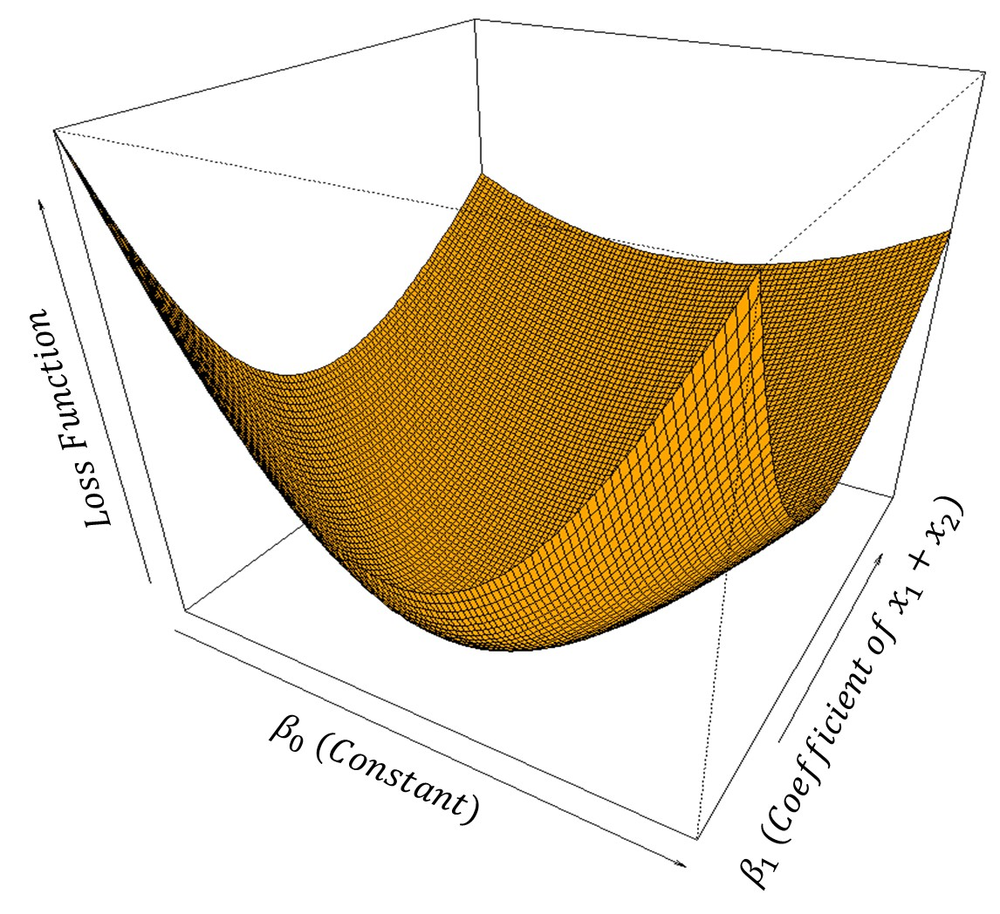
Formulation vectorielle (N dimensions) :
$\beta^{(k+1)} = \beta^{(k)} - \eta \nabla L\left(\beta^{(k)}\right)$
Le vecteur gradient $\nabla L$ contient toutes les dérivées partielles :
$\nabla L(\beta) = \begin{bmatrix} \frac{\partial L}{\partial \beta_0}(\beta) \\ \vdots \\ \frac{\partial L}{\partial \beta_p}(\beta) \end{bmatrix}$
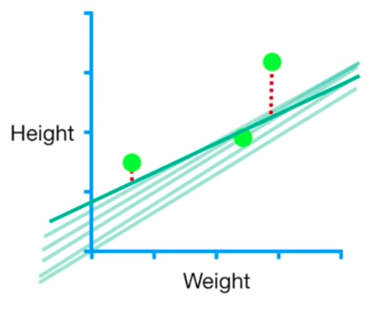
2.4 Gradient analytique pour OLS
$\frac{\partial SSR}{\partial \beta_0} = \sum_{i=1}^{n} -2(y_i - \hat{y}_i)$
$\frac{\partial SSR}{\partial \beta_1} = \sum_{i=1}^{n} -2 X_1^{(i)}(y_i - \hat{y}_i)$
En forme vectorielle :
$\nabla SSR(\beta) = -2 X^T (y - \hat{y})$
2.5 Effet du Learning Rate $\eta$
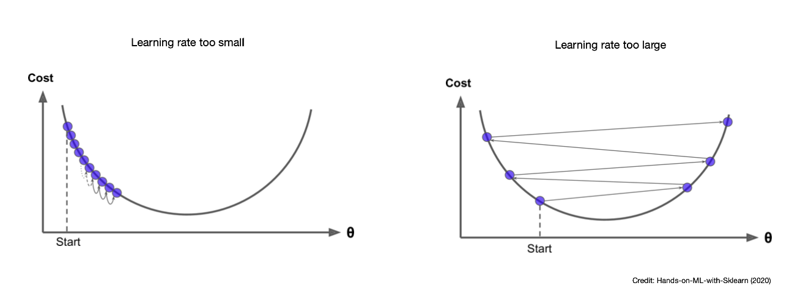
| Learning Rate | Avantages | Inconvénients |
|---|---|---|
| Faible | Chemin plus court vers le minimum | Plus d'epochs, risque de minima locaux |
| Élevé | Moins d'epochs | Peut ne jamais converger |
Le Gradient Descent converge beaucoup plus vite quand les features sont scalées — un paysage de loss isotrope permet des pas uniformes dans toutes les directions.
3) Variantes de Gradient Descent & Autres Solvers
3.1 Gradient Descent complet vs Mini-Batch vs SGD
| Méthode | Observations utilisées par step | Stabilité | Vitesse |
|---|---|---|---|
| Full Gradient Descent | Toutes ($n$) | Très stable | Lent sur grands $n$ |
| Mini-Batch GD | Un sous-ensemble (ex: 16) | Bon compromis | Bon compromis |
| SGD | 1 seule | Bruitée | Très rapide |
Mini-Batch Gradient Descent :
- Choisir une taille de batch (ex: 16)
- Calculer le gradient $\nabla L_{mini}$ sur ce batch
- Mettre à jour $\beta^{(k+1)} = \beta^{(k)} - \eta \nabla L_{mini}(\beta^{(k)})$
- Passer au batch suivant, répéter par epoch
Stochastic Gradient Descent (SGD) = Mini-Batch de taille 1 :
b0 = 0
eta = 0.1
n_epoch = 5
for epoch in range(n_epoch):
for i in np.random.permutation(3): # ordre aléatoire des observations
X_mini = X[i] # 1 seul point
y_pred = h(X_mini, b0)
y_true = y[i]
derivative = -2 * (y_true - y_pred) # gradient sur 1 point
b0 = b0 - eta * derivative
print(f'b0 epoch {epoch}:', b0)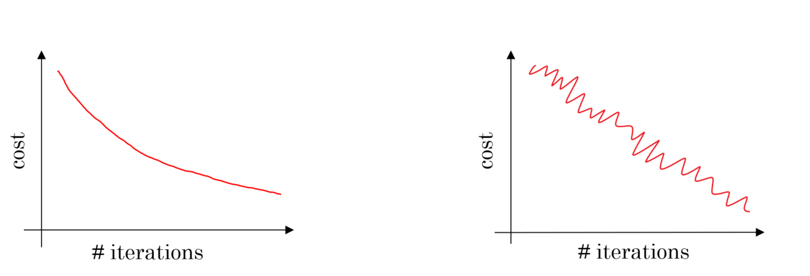
Avantages de SGD :
- Plus rapide sur très grands datasets
- Peut sortir des minima locaux grâce au bruit
- Réduit considérablement la charge RAM (utile en Deep Learning)
Inconvénients :
- Nécessite plus d'itérations
- Ne converge jamais exactement
Utiliser SGD quand n ≥ 100 000 observations, pour sortir d'un minimum local, ou par défaut en Deep Learning.
3.2 SGDRegressor et SGDClassifier sklearn
from sklearn.linear_model import SGDRegressor, SGDClassifier, LinearRegression
LinearRegression() # OLS → inversion matricielle (SVD)
SGDRegressor(loss='squared_error') # OLS → résolu par SGD
SGDClassifier(loss='log_loss') # équivalent LogisticRegression
SGDClassifier(loss='hinge') # équivalent SVCComparaison de vitesse sur grand dataset :
from sklearn.datasets import make_regression
X, y = make_regression(n_samples=10000, n_features=1000)
LinearRegression().fit(X, y) # → Wall time: 2.07s (inversion O(p³))
SGDRegressor().fit(X, y) # → Wall time: 0.189s (SGD scale bien)3.3 Solvers avancés
Descentes de gradient améliorées :
- Gradient : descente classique
- Momentum : ajoute de l'inertie — évite les oscillations
- AdaGrad : learning rate adaptatif par feature — priorité aux paramètres peu mis à jour
- RMSProp : ajoute un decay — seul le gradient récent compte
- Adam : combine tout — le plus utilisé en Deep Learning
👉 Visualisation des optimiseurs
Méthodes de second ordre (Matrice Hessienne) :
- Newton's Method, L-BFGS : approximent la courbure locale
- Avantages : convergence en beaucoup moins d'epochs
- Inconvénients : coûteux en calcul
- Utilisé par défaut dans
LogisticRegressionsklearn (solver='lbfgs')
LogisticRegression(solver='newton-cg') # solver de second ordre
LogisticRegression(solver='lbfgs') # L-BFGS (défaut sklearn)4) Fonctions de Perte
Loss ≠ Métrique de performance : la loss sert à fitter le modèle (calculée pendant .fit()). Les métriques (MSE, R², accuracy) servent à évaluer après le fit. La loss doit être (sub)différentiable — l'accuracy ne peut jamais être une loss.
4.1 Losses de régression
L2 — MSE (Mean Squared Error) :
$L_2 = MSE = \frac{1}{n}\sum_{i=1}^{n}(\hat{y}_i - y_i)^2$
- Très sensible aux outliers (pénalité quadratique)
- Gradient simple : $\nabla MSE = -\frac{2}{n} X^T(y - \hat{y})$
L1 — MAE (Mean Absolute Error) :
$L_1 = MAE = \frac{1}{n}\sum_{i=1}^{n}|\hat{y}_i - y_i|$
- Robuste aux outliers
- Nécessite un learning rate décroissant (non différentiable en 0)
Huber Loss (mix L1/L2) :
$L_\delta = \begin{cases} \frac{1}{2}(y - \hat{y})^2 & \text{si } |y - \hat{y}| < \delta \\ \delta(|y - \hat{y}| - \frac{1}{2}\delta) & \text{sinon} \end{cases}$
- Se comporte comme MSE pour les petites erreurs, MAE pour les grandes
- Réglable via l'hyperparamètre
epsilon
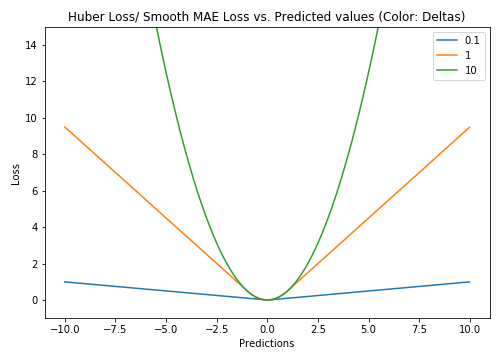
SGDRegressor(loss='squared_error') # L2 = MSE
SGDRegressor(loss='absolute_error') # L1 = MAE
SGDRegressor(loss='huber', epsilon=0.1) # Huber : seuil ε ajustable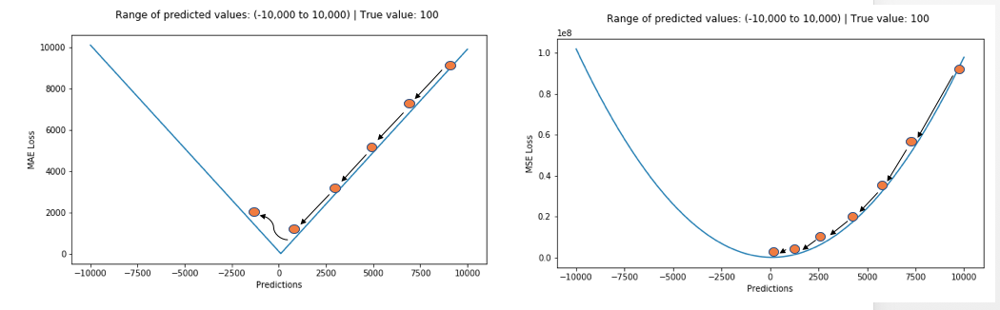
4.2 Losses de classification
Log-Loss (Cross-Entropy Loss) :
$\text{Log Loss} = -\frac{1}{n}\sum_{i=0}^{n} y_i \log(\hat{y}_i) + (1 - y_i)\log(1 - \hat{y}_i)$
- $y = 1 \Rightarrow \text{Log Loss} = -\log(\hat{y})$
- $y = 0 \Rightarrow \text{Log Loss} = -\log(1 - \hat{y})$
- Pénalise infiniment les prédictions totalement fausses
- Gradient de la log-loss appliquée à la sigmoïde :
$\nabla \text{LogLoss}_{\text{sigmoid}} = -\frac{1}{n} X^T(y - \hat{y})$
Le gradient de la log-loss (sigmoïde) et du MSE (linéaire) ont la même forme vectorielle $-\frac{C}{n}X^T(y-\hat{y})$ — seule la prédiction $\hat{y}$ diffère ($hat{y} = Xbeta$ vs $hat{y} = sigma(Xbeta)$).
SGDClassifier(loss='log_loss') # Log-Loss → classifieur logistique
SGDClassifier(loss='hinge') # Hinge Loss → SVM5) Récapitulatif — Vocabulaire ML
5.1 Paramètres vs Hyperparamètres
| Définition | Exemples | Qui les détermine ? | |
|---|---|---|---|
| Paramètres $\beta$ | Coefficients du modèle | $\beta_0, \beta_1, \dots$ | .fit() automatiquement |
| Hyperparamètres | Choix de configuration | eta, loss, solver, n_neighbors | Manuellement |
5.2 Les composantes d'un modèle
- Hypothèse $h(X, \beta)$ : fonction de prédiction (linéaire, sigmoïde, réseau de neurones…)
- Loss $L$ : fonction à minimiser pendant
.fit()(MSE, MAE, Log-Loss…) - Solver : méthode pour minimiser $L$ (GD, SGD, newton, lbfgs…)
5.3 Modèles sklearn
## Régresseurs
LinearRegression() # régression OLS
KNeighborsRegressor() # KNN régression
SVR() # Support Vector Regressor
## Classifieurs
LogisticRegression() # régression logistique
KNeighborsClassifier() # KNN classification
SVC() # Support Vector Classifier
## SGD (hypothèse linéaire, solver SGD — loss au choix)
SGDRegressor(loss='squared_error') # = OLS
SGDRegressor(loss='huber') # régression linéaire robuste
SGDClassifier(loss='log_loss') # = LogisticRegression
SGDClassifier(loss='hinge') # = SVC5.4 Fine-tuning des hyperparamètres
SGDRegressor(loss='squared_error', learning_rate='constant', eta0=0.01)
KNeighborsRegressor(n_neighbors=5)
LogisticRegression(solver='newton-cg', max_iter=1000)📚 Bibliographie
👉 StatsQuest — Gradient Descent (vidéo)
👉 Hands-On ML with SKLearn — Chapter 4
👉 Andrew NG — Linear Models CS229 Notes
👉 Derivative of log-loss function
👉 Distill — Momentum & Optimizers
👉 Visualisation des optimiseurs (Adam, RMSProp…)
👉 sklearn.linear_model.SGDRegressor
🧭 Introduction
Quand tu appelles .fit() sur un modèle scikit-learn, il ne se passe pas de magie. Le modèle cherche les meilleurs réglages internes (ses paramètres) pour coller au mieux à tes données. Pour cela, il utilise des techniques mathématiques précises : une fonction de perte qui mesure les erreurs, et un algorithme d'optimisation qui les réduit pas à pas.
Ce cours ouvre le capot. Tu vas comprendre ce qui tourne vraiment sous .fit().
A retenir absolument
- Un modèle ML, c'est une hypothèse (une formule) + un critère d'erreur (la loss) + une méthode pour minimiser l'erreur (le solver).
- La descente de gradient est la méthode la plus courante : on avance dans la direction qui fait descendre l'erreur.
- Le learning rate contrôle la taille des pas — ni trop grand, ni trop petit.
- Loss function ≠ métrique : la loss sert à entraîner, la métrique sert à évaluer.
- Toujours normaliser ses features avant d'utiliser la descente de gradient.
L'analogie fil rouge : le randonneur dans le brouillard
Imagine un randonneur posé quelque part dans la montagne, par nuit de brouillard. Son objectif : atteindre le point le plus bas de la vallée. Il ne voit pas la carte entière. Il tâte le sol autour de lui pour sentir la pente, puis avance d'un pas dans la direction qui descend. Il recommence encore et encore, jusqu'à ce que le sol soit plat.
C'est exactement ce que fait la descente de gradient :
- La montagne = la fonction de perte (l'erreur du modèle)
- La position du randonneur = les paramètres du modèle ($\beta_0$, $\beta_1$, ...)
- La pente ressentie = le gradient (la dérivée)
- La taille du pas = le learning rate $\eta$
- Le fond de la vallée = le minimum de la loss (le meilleur modèle)
Mini-plan du cours
- Ce qui se passe derrière
.fit()— le modèle comme hypothèse - La descente de gradient — algorithme pas à pas
- Les variantes : Batch, Mini-Batch, SGD
- Les fonctions de perte — régression et classification
- Vocabulaire final : paramètres, hyperparamètres, solvers
1. Ce qui se passe derrière .fit()
1.1 Le modèle comme hypothèse
Quand tu entraînes une régression linéaire, tu cherches une droite qui colle à tes données. Cette droite est décrite par une équation qu'on appelle hypothèse :
Traduction des symboles :
| Symbole | Signification | Exemple concret |
|---|---|---|
| $\hat{y}$ | La valeur prédite par le modèle | taille prédite d'une personne |
| $h$ | La fonction d'hypothèse | la formule de la droite |
| $X$ | Les données d'entrée | le poids de la personne |
| $\beta_0$ | L'ordonnée à l'origine (intercept) | taille quand poids = 0 (point de départ de la droite) |
| $\beta_1$ | La pente (slope) | de combien la taille augmente par kg de poids |
Exemple chiffré : si le modèle trouve $\beta_0 = 0.94$ et $\beta_1 = 0.62$, alors pour quelqu'un pesant 70 kg :
from sklearn.linear_model import LinearRegression
model = LinearRegression()
model.fit(data[['weight']], data['height']) # .fit() cherche les meilleurs beta
print('beta_0 (intercept) =', model.intercept_) # → 0.9434
print('beta_1 (pente) =', model.coef_[0]) # → 0.6220.fit() fait tout le travail : il cherche les valeurs de $\beta_0$ et $\beta_1$ qui minimisent l'erreur. Toi, tu n'as rien à calculer à la main.
1.2 La Loss Function (fonction de perte)
La loss function est la boussole du modèle : elle mesure à quel point les prédictions sont mauvaises. Plus la loss est élevée, plus le modèle se trompe.
L'objectif de .fit() est de trouver les paramètres $\beta$ qui rendent la loss la plus petite possible :
Traduction :
- $\arg\min_\beta$ signifie "trouve la valeur de $\beta$ qui minimise ce qui suit"
- $L$ est la loss function
- On cherche le $\beta$ qui donne la plus petite erreur possible
Pour la régression linéaire classique (OLS — Ordinary Least Squares) :
Traduction :
- $y_i$ = vraie valeur pour l'observation $i$
- $\hat{y}_i$ = valeur prédite pour l'observation $i$
- $(y_i - \hat{y}_i)^2$ = erreur au carré pour l'observation $i$
- $\sum_{i=1}^{n}$ = on additionne pour toutes les $n$ observations
Exemple chiffré : 3 observations avec erreurs de 2, -1, 3 :
Pourquoi mettre au carré les erreurs ? Pour deux raisons : 1) une erreur négative devient positive (on ne veut pas qu'elles s'annulent), et 2) les grandes erreurs sont pénalisées beaucoup plus fort que les petites.
1.3 La forme de la loss — intuition géométrique
Pour un modèle linéaire, la loss function en fonction des paramètres a une forme de bol (convexe). Il n'y a qu'un seul minimum — le fond du bol. C'est là qu'on veut aller.
Si on a deux paramètres ($\beta_0$ et $\beta_1$), la loss forme une surface 3D en forme de vallée. La descente de gradient fait descendre un point sur cette surface jusqu'au fond.
La convexité garantit qu'il n'y a pas de "faux fond" : le minimum qu'on trouve est toujours le vrai minimum global (pour les modèles linéaires).
2. La Descente de Gradient
2.1 L'idée centrale
La descente de gradient répond à la question : dans quelle direction dois-je modifier $\beta$ pour que la loss diminue ?
La réponse : dans la direction opposée au gradient (la pente).
Le gradient d'une loss par rapport à un paramètre, c'est la dérivée partielle :
Traduction : "de combien change la loss $L$ si je fais varier $\beta_0$ d'un tout petit peu ?"
- Si cette valeur est positive : augmenter $\beta_0$ ferait monter la loss → il faut diminuer $\beta_0$
- Si cette valeur est négative : augmenter $\beta_0$ ferait descendre la loss → il faut augmenter $\beta_0$
- Si cette valeur est nulle : on est au minimum !
2.2 L'algorithme en 1D — formule de mise à jour
Traduction symbole par symbole :
| Symbole | Signification |
|---|---|
| $\beta_0^{(k)}$ | Valeur actuelle de $\beta_0$ à l'étape $k$ |
| $\beta_0^{(k+1)}$ | Nouvelle valeur de $\beta_0$ après la mise à jour |
| $\eta$ (eta) | Le learning rate — la taille du pas |
| $\frac{\partial L}{\partial \beta_0}$ | La pente de la loss par rapport à $\beta_0$ (le gradient) |
En français : "la nouvelle valeur = ancienne valeur moins (taille du pas × pente actuelle)"
Exemple numérique : $\beta_0 = 0$, gradient = $5.45$, $\eta = 0.1$
On se déplace de 0 vers -0.545, dans la direction qui fait descendre la loss.
Les 4 étapes de l'algorithme :
- Initialiser $\beta_0$ (souvent à 0)
- Calculer la dérivée de la loss en ce point
- Mettre à jour $\beta_0$ avec la formule ci-dessus
- Répéter jusqu'au critère d'arrêt (taille de pas < 0.001, ou max 1000 epochs)
Une epoch = un passage complet sur toutes les données. Après 100 epochs, le modèle a regardé les données 100 fois de suite.
2.3 Implémentation manuelle — exemple complet
import numpy as np
X = data['weight'] # données d'entrée (poids)
y = data['height'] # vraies valeurs (taille)
b1 = 0.64 # on suppose la pente connue pour simplifier
eta = 0.1 # learning rate : taille du pas
def h(x, b0):
return b0 + b1 * x # hypothèse : prédiction ŷ
b0 = 0 # on initialise l'intercept à 0
# --- Epoch 0 ---
# Calcul de la loss (SSR = somme des résidus au carré)
loss_0 = np.sum((y - h(X, b0)) ** 2) # → 3.159
# Calcul du gradient (dérivée de SSR par rapport à b0)
derivative = np.sum(-2 * (y - h(X, b0))) # → 5.448
# Mise à jour de b0
b0 = b0 - eta * derivative # → 0 - 0.1 * 5.448 = -0.545
# --- Epoch 1 ---
derivative = np.sum(-2 * (y - h(X, b0))) # gradient plus petit (on descend)
b0 = b0 - eta * derivative # b0 → -0.763
# On répète jusqu'à convergence...Récap du code : à chaque epoch, on calcule la pente de la courbe d'erreur à l'endroit où on se trouve, et on fait un petit pas dans la direction opposée. La loss diminue progressivement.
Pourquoi la formule du gradient est $-2(y - \hat{y})$ ? Parce qu'on dérive $\sum (y - \hat{y})^2$ par rapport à $\beta_0$. La règle de dérivation donne le facteur $-2$, et la somme des résidus $(y - \hat{y})$.
2.4 Descente en 2D — co-optimiser plusieurs paramètres
Quand on a deux paramètres ($\beta_0$ et $\beta_1$), on les met à jour simultanément à chaque étape. La formule vectorielle généralise à $n$ paramètres :
Le vecteur gradient $\nabla L$ (nabla L) contient toutes les dérivées partielles regroupées :
Traduction : c'est un vecteur qui indique la "pente" de la loss dans chaque direction (une direction par paramètre). On se déplace dans la direction exactement opposée à ce vecteur.
Gradient analytique pour OLS :
En forme compacte (vectorielle) :
Traduction : $X^T$ est la transposée de la matrice des features, et $(y - \hat{y})$ est le vecteur des résidus (erreurs). Le produit matriciel calcule efficacement toutes les dérivées en une seule ligne.
La forme vectorielle est plus compacte et s'exécute beaucoup plus vite en Python grâce à NumPy. C'est pourquoi on l'utilise en pratique plutôt que d'écrire une boucle.
2.5 L'effet du learning rate $\eta$
Le learning rate est l'un des réglages les plus importants :
| Situation | Ce qui se passe |
|---|---|
| $\eta$ trop petit (ex: 0.0001) | Convergence très lente, beaucoup d'epochs nécessaires |
| $\eta$ bien choisi (ex: 0.01) | Descente régulière et efficace |
| $\eta$ trop grand (ex: 10) | Le modèle "saute" par-dessus le minimum et diverge |
Analogie : si le randonneur fait des pas de 1 cm, il arrivera au fond mais mettra très longtemps. S'il fait des pas de 10 km, il va rebondir d'un versant à l'autre sans jamais descendre.
Un learning rate trop grand fait diverger le modèle : la loss monte au lieu de descendre. Commence toujours entre 0.01 et 0.1, puis ajuste.
Toujours standardiser (scaler) les features avant la descente de gradient. Sans ça, la "vallée" de la loss est très allongée dans certaines directions, et le gradient descent zigzague au lieu de descendre droit.
3. Les Variantes de Gradient Descent
3.1 Full GD, Mini-Batch et SGD
La descente de gradient classique calcule le gradient sur toutes les données à chaque étape. C'est précis mais lent sur de grands datasets. Il existe trois variantes :
| Méthode | Observations par étape | Stabilité | Vitesse |
|---|---|---|---|
| Full Gradient Descent | Toutes ($n$) | Très stable, trajectoire lisse | Lent sur grands $n$ |
| Mini-Batch GD | Un sous-ensemble (ex: 16) | Bon compromis | Bon compromis |
| SGD (Stochastic GD) | 1 seule | Bruitée, trajectoire en zigzag | Très rapide |
Mini-Batch : on coupe les données en petits paquets (batches). À chaque étape, on calcule le gradient sur un seul batch. Quand on a parcouru tous les batches, c'est une epoch.
Traduction : même formule qu'avant, mais $\nabla L_{\text{mini}}$ est calculé sur un petit sous-ensemble des données, pas sur toutes.
SGD (Stochastic Gradient Descent) = Mini-Batch de taille 1 :
À chaque étape, on tire une seule observation au hasard et on met à jour les paramètres immédiatement.
b0 = 0 # intercept initialisé à 0
eta = 0.1 # learning rate
n_epoch = 5 # nombre de passes sur les données
for epoch in range(n_epoch):
# On parcourt les observations dans un ordre aléatoire
for i in np.random.permutation(len(X)):
X_mini = X[i] # 1 seul point
y_pred = h(X_mini, b0) # prédiction sur ce point
y_true = y[i] # vraie valeur
derivative = -2 * (y_true - y_pred) # gradient sur 1 point
b0 = b0 - eta * derivative # mise à jour immédiateRécap : la boucle extérieure = les epochs. La boucle intérieure = on parcourt chaque observation une par une, dans un ordre mélangé. Après chaque observation, on met à jour $b0$ directement.
Avantages de SGD :
- Beaucoup plus rapide sur de très grands datasets
- Le bruit des mises à jour peut sortir d'un minimum local (utile pour les réseaux de neurones)
- Utilise très peu de RAM (on ne charge qu'un point à la fois)
Inconvénients :
- Nécessite plus d'itérations pour converger
- Ne converge jamais exactement au minimum (oscille autour)
En Deep Learning, on utilise toujours SGD (ou une variante). Les réseaux de neurones ont des milliards de paramètres et des millions d'exemples : impossible de tout charger en mémoire.
3.2 SGDRegressor et SGDClassifier en sklearn
from sklearn.linear_model import SGDRegressor, SGDClassifier, LinearRegression
# Régression
LinearRegression() # OLS résolu par inversion matricielle (méthode SVD)
SGDRegressor(loss='squared_error') # OLS résolu par SGD — même résultat, méthode différente
SGDRegressor(loss='huber') # Régression linéaire robuste aux valeurs aberrantes
# Classification
SGDClassifier(loss='log_loss') # Équivalent à LogisticRegression
SGDClassifier(loss='hinge') # Équivalent à SVC (Support Vector Classifier)Comparaison de vitesse sur un grand dataset :
from sklearn.datasets import make_regression
# Création d'un grand dataset : 10 000 observations, 1 000 features
X, y = make_regression(n_samples=10000, n_features=1000)
LinearRegression().fit(X, y) # → ~2.07 secondes (inversion matricielle en O(p³))
SGDRegressor().fit(X, y) # → ~0.19 secondes (SGD, beaucoup plus rapide)Pourquoi LinearRegression est si lent sur de nombreuses features ? Parce qu'il résout le problème exactement par inversion de matrice, une opération dont le coût est en $O(p^3)$ — si $p$ double, le temps est multiplié par 8. SGD évite complètement cette inversion.
3.3 Les solvers avancés
Au-delà de SGD, il existe des algorithmes plus sophistiqués, surtout utilisés en Deep Learning :
Variantes basées sur le gradient :
- Gradient classique : le randonneur basique
- Momentum : le randonneur acquiert de l'élan — il oscille moins et passe les "petites bosses"
- AdaGrad : chaque paramètre a son propre learning rate — les paramètres peu mis à jour reçoivent un plus grand pas
- RMSProp : comme AdaGrad mais avec une "mémoire courte" — seuls les gradients récents comptent
- Adam : combine Momentum + RMSProp — le plus utilisé en Deep Learning aujourd'hui
Méthodes de second ordre (utilisant la matrice Hessienne) :
La Hessienne est la matrice des dérivées secondes — elle mesure la courbure de la loss, pas juste la pente. Connaître la courbure permet de faire des pas beaucoup plus intelligents.
- Newton's Method, L-BFGS : approximent la courbure locale
- Convergent en beaucoup moins d'epochs
- Mais coûteux à calculer (matrice de taille $p \times p$)
- Utilisé par défaut dans
LogisticRegressionde sklearn
from sklearn.linear_model import LogisticRegression
LogisticRegression(solver='lbfgs') # L-BFGS : défaut sklearn — méthode de second ordre
LogisticRegression(solver='newton-cg') # Newton conjugate gradient — autre méthode de second ordreLes méthodes de second ordre (L-BFGS, Newton) sont excellentes pour les petits datasets avec peu de features, mais deviennent impraticables en Deep Learning (trop de paramètres pour calculer la Hessienne).
4. Les Fonctions de Perte
Loss function ≠ métrique de performance. La loss sert à entraîner le modèle (calculée pendant .fit()). Les métriques (MSE, R², accuracy) servent à évaluer après le fit. Différence clé : la loss doit être différentiable (on a besoin de sa dérivée pour la descente de gradient). L'accuracy ne l'est pas — impossible de l'utiliser comme loss.
4.1 Les losses de régression
L2 — MSE (Mean Squared Error, erreur quadratique moyenne)
Traduction : on calcule l'erreur $(\hat{y}_i - y_i)$ pour chaque observation, on la met au carré, et on fait la moyenne sur les $n$ observations.
Exemple chiffré : 4 observations, erreurs = [1, -2, 0, 3]
Son gradient :
Traduction : on multiplie la transposée de la matrice des features par le vecteur des résidus (erreurs). Ce calcul donne la direction de descente pour chaque paramètre.
Caractéristiques :
- Très sensible aux outliers (valeurs aberrantes) : une erreur de 10 pèse autant que 100 erreurs de 1 ($10^2 = 100$)
- Gradient simple à calculer
L1 — MAE (Mean Absolute Error, erreur absolue moyenne)
Traduction : même principe que MSE, mais on prend la valeur absolue de l'erreur au lieu de la mettre au carré.
Exemple chiffré : mêmes erreurs = [1, -2, 0, 3]
Caractéristiques :
- Robuste aux outliers : une erreur de 10 pèse exactement 10 fois plus qu'une erreur de 1 (pas 100 fois)
- Non différentiable en 0 (la valeur absolue a une "pointe") → nécessite un learning rate décroissant
Huber Loss — le meilleur des deux mondes
Traduction :
- $\delta$ (delta) est un seuil réglable (l'hyperparamètre
epsilondans sklearn) - Si l'erreur est petite (en dessous du seuil) : on utilise MSE — descente lisse et précise
- Si l'erreur est grande (outlier potentiel) : on utilise MAE — on limite la pénalité
Exemple chiffré avec $\delta = 1$ :
- Erreur de 0.5 (petite) : $L = \frac{1}{2} \times 0.5^2 = 0.125$ (comportement MSE)
- Erreur de 5 (grande) : $L = 1 \times (5 - 0.5) = 4.5$ (comportement MAE)
from sklearn.linear_model import SGDRegressor
SGDRegressor(loss='squared_error') # L2 = MSE : pénalise fortement les grandes erreurs
SGDRegressor(loss='absolute_error') # L1 = MAE : robuste aux valeurs aberrantes
SGDRegressor(loss='huber', epsilon=0.1) # Huber : seuil delta ajustable via epsilonQuand utiliser quoi ? MSE par défaut. MAE ou Huber si tu soupçonnes des outliers dans tes données (mesures erronées, valeurs extrêmes).
4.2 Les losses de classification
Log-Loss (Cross-Entropy Loss)
Traduction symbole par symbole :
- $y_i$ = vraie classe (0 ou 1)
- $\hat{y}_i$ = probabilité prédite d'appartenir à la classe 1 (entre 0 et 1)
- $\log$ = logarithme naturel
Ce que ça fait dans les deux cas :
- Si $y_i = 1$ : la loss est $-\log(\hat{y}_i)$. Si le modèle prédit une proba de 0.9 (bien), $-\log(0.9) \approx 0.1$ (petite perte). Si le modèle prédit 0.1 (mal), $-\log(0.1) \approx 2.3$ (grande perte).
- Si $y_i = 0$ : la loss est $-\log(1 - \hat{y}_i)$. Même logique : pénalise si le modèle a affirmé à tort que c'était la classe 1.
Exemple chiffré : une seule observation, $y = 1$, $\hat{y} = 0.7$
Si au lieu de 0.7 le modèle avait prédit 0.01 (très faux) :
La log-loss pénalise infiniment une prédiction totalement fausse : si tu es sûr à 100% d'une mauvaise réponse, la pénalité tend vers l'infini. Ça force le modèle à toujours rester un peu incertain.
Le gradient de la log-loss (avec sigmoïde) a la même forme qu'en régression :
Traduction : formule identique à MSE ! Seul $\hat{y}$ diffère — en classification, $\hat{y} = \sigma(X\beta)$ (la sigmoïde), pas $\hat{y} = X\beta$.
C'est une belle symétrie mathématique : les algorithmes d'optimisation (SGD, etc.) fonctionnent de façon quasi-identique pour la régression et la classification, parce que leurs gradients ont la même forme.
Hinge Loss (pour les SVM)
La hinge loss est utilisée par les Support Vector Machines (SVM). Elle ne prédit pas une probabilité mais cherche une marge maximale entre les classes. On ne la détaille pas ici, mais voici comment l'utiliser :
from sklearn.linear_model import SGDClassifier
SGDClassifier(loss='log_loss') # Log-Loss → classifieur logistique (comme LogisticRegression)
SGDClassifier(loss='hinge') # Hinge Loss → SVM (comme SVC)5. Vocabulaire Final
5.1 Paramètres vs Hyperparamètres
| Définition | Exemples | Qui les détermine ? | |
|---|---|---|---|
| Paramètres $\beta$ | Réglages internes appris par le modèle | $\beta_0, \beta_1, \ldots$ | .fit() automatiquement |
| Hyperparamètres | Choix de configuration faits avant l'entraînement | eta, loss, solver, n_neighbors | Toi, manuellement |
Analogie : les paramètres, c'est comme la recette que le chef invente en cuisinant. Les hyperparamètres, c'est le four que tu lui fournis (température, type de cuisson) — il ne peut pas les modifier lui-même.
5.2 Les trois composantes d'un modèle
Tout modèle ML se définit par trois éléments :
- L'hypothèse $h(X, \beta)$ : la formule de prédiction (droite, sigmoïde, réseau de neurones...)
- La loss $L$ : la fonction qu'on minimise pendant
.fit()(MSE, MAE, Log-Loss...) - Le solver : la méthode pour minimiser $L$ (GD, SGD, L-BFGS...)
# Exemples : les 3 composantes de chaque modèle
# LinearRegression : hypothèse linéaire + MSE + inversion matricielle (SVD)
LinearRegression()
# SGDRegressor : hypothèse linéaire + MSE + SGD
SGDRegressor(loss='squared_error')
# LogisticRegression : hypothèse sigmoïde + Log-Loss + L-BFGS (défaut)
LogisticRegression()
# SGDClassifier : hypothèse linéaire + Log-Loss + SGD
SGDClassifier(loss='log_loss')5.3 Réglage des hyperparamètres
# Contrôle fin du learning rate et du solver
SGDRegressor(loss='squared_error', learning_rate='constant', eta0=0.01)
# KNN : l'hyperparamètre est le nombre de voisins
KNeighborsRegressor(n_neighbors=5)
# LogisticRegression : choix du solver et nombre d'itérations max
LogisticRegression(solver='newton-cg', max_iter=1000)Erreurs fréquentes à éviter :
- Learning rate trop grand (eta=10) → le modèle diverge
- Oublier de scaler les features avant SGD → convergence très lente
- Utiliser LinearRegression sur un très grand dataset → trop lent (préférer SGDRegressor)
- Arrêter l'entraînement trop tôt → modèle pas encore convergé
🎯 Questions de vérification
Question 1. Tu entraînes un modèle SGDRegressor et tu vois que la loss augmente à chaque epoch au lieu de diminuer. Quelle est la cause la plus probable, et comment la corriger ?
Question 2. Quelle est la différence entre une loss function et une métrique de performance ? Pourquoi ne peut-on pas utiliser l'accuracy comme loss ?
Question 3. Dans la formule $\beta_0^{(k+1)} = \beta_0^{(k)} - \eta \cdot \frac{\partial L}{\partial \beta_0}$, que se passe-t-il si le gradient $\frac{\partial L}{\partial \beta_0}$ est négatif ? Dans quelle direction se déplace-t-on ?
Question 4. Tu travailles sur un dataset de 500 000 observations avec 800 features. Dois-tu utiliser LinearRegression ou SGDRegressor ? Justifie en termes de complexité algorithmique.
📌 TL;DR
.fit()cherche les paramètres $\beta$ qui minimisent la loss function (l'erreur du modèle).- La descente de gradient est l'algorithme principal : à chaque étape, on calcule la pente (gradient) de la loss et on se déplace dans la direction opposée.
- La formule de mise à jour est $\beta^{(k+1)} = \beta^{(k)} - \eta \cdot \nabla L(\beta^{(k)})$ : nouvelle valeur = ancienne valeur moins (learning rate × gradient).
- Le learning rate $\eta$ contrôle la taille des pas : trop grand → divergence, trop petit → lenteur.
- SGD (Stochastic Gradient Descent) met à jour les paramètres après chaque observation : plus rapide, plus bruité, indispensable sur les grands datasets et en Deep Learning.
- En régression, les losses principales sont MSE (sensible aux outliers), MAE (robuste) et Huber (compromis).
- En classification, la Log-Loss pénalise les prédictions fausses faites avec beaucoup de confiance.
- Loss ≠ métrique : la loss guide l'entraînement (doit être dérivable), la métrique évalue le modèle final.
- Toujours scaler les features avant SGD pour que la descente converge efficacement.
- Sur les grands datasets ($n$ ou $p$ élevés),
SGDRegressorest bien plus rapide queLinearRegression(évite l'inversion matricielle en $O(p^3)$).
A. Concepts du cours
La fonction de coût comme paysage
Quand vous entraînez un modèle, vous cherchez les paramètres $\mathbf{w}$ qui minimisent une fonction de coût $\mathcal{L}(\mathbf{w})$. Cette fonction mesure "à quel point mon modèle se trompe sur le dataset". Elle est définie sur l'espace des paramètres : si votre modèle a 1000 poids, $\mathcal{L}$ est une fonction de $\mathbb{R}^{1000} \to \mathbb{R}$ (elle prend un vecteur de 1000 nombres et retourne un seul nombre, l'erreur).
Lecture : la loss prend en entrée un vecteur de paramètres $\mathbf{w}$ de dimension $d$ (nombre de poids du modèle), et renvoie un seul nombre (l'erreur totale). Plus ce nombre est petit, mieux votre modèle fit les données.
Visualisation simplifiée en 2D :
- Axes X et Y : deux paramètres du modèle (ex : pente $a$ et ordonnée $b$ d'une droite $y = ax + b$)
- Axe Z : valeur de la loss correspondante
- Le paysage qui en résulte ressemble à des montagnes et des vallées
Exemple chiffré : pour une régression linéaire $y = w_1 x + w_0$ avec les points $(1, 2), (2, 4), (3, 6)$, la MSE est $\mathcal{L}(w_0, w_1) = \frac{1}{3}\sum_i (w_0 + w_1 x_i - y_i)^2$. Le minimum est à $(w_0, w_1) = (0, 2)$ avec $\mathcal{L} = 0$.
Votre objectif est de descendre dans une vallée. Trois types de vallées :
- Minimum global : la vallée la plus basse de tout le paysage. Idéal.
- Minimum local : une vallée plus haute que la globale, mais entourée de pics. Vous pouvez vous y retrouver coincé.
- Plateau / saddle point (point-selle) : une zone plate où le gradient ≈ 0, mais ce n'est pas un minimum. Encore plus piégeux car la descente s'arrête naturellement sans qu'on s'en aperçoive.
Analogie : imaginez un randonneur les yeux bandés qui veut atteindre le point le plus bas d'une vallée. Il sent la pente sous ses pieds et descend dans la direction la plus raide. Stratégie raisonnable, mais s'il y a plusieurs vallées, il finit dans la plus proche, pas forcément la plus basse. C'est exactement la descente de gradient.
Convexité et minima globaux
Une fonction est convexe si pour tous $\mathbf{x}_1, \mathbf{x}_2$ et $t \in [0, 1]$ :
Lecture : si vous prenez deux points quelconques sur le graphe de la fonction et que vous tracez la corde qui les relie, la fonction reste toujours en dessous (ou sur) cette corde. Pas de "bosses" qui dépassent. Le membre de gauche évalue la fonction en un point intermédiaire ; le membre de droite est l'interpolation linéaire entre les deux valeurs. Convexe ⇔ la fonction est plus basse que la ligne droite.
Géométriquement : tout segment reliant deux points du graphe reste au-dessus du graphe. Cette propriété entraîne une garantie magique :
Une fonction convexe a un seul minimum (qui est donc global).
Conséquence : pour un problème convexe, la descente de gradient converge toujours vers la solution optimale, quel que soit le point de départ.
Modèles aux loss convexes :
- Régression linéaire (MSE) → convexe
- Régression logistique (log-loss) → convexe
- SVM linéaire (hinge loss) → convexe
- Lasso, Ridge, ElasticNet → convexes
Modèles aux loss non convexes :
- Réseaux de neurones → généralement non convexes (le grand mystère du deep learning : ça marche quand même, grâce à la sur-paramétrisation et aux bons optimizers)
- GMM avec EM → non convexe
- K-means → non convexe (d'où le
n_init=10par défaut)
Question d'entretien classique : "Pourquoi initialise-t-on aléatoirement les poids d'un réseau de neurones plusieurs fois ?" Réponse : parce que la loss est non convexe et qu'on tombe dans des minima locaux différents selon l'initialisation. On lance l'entraînement N fois avec des seeds différents et on garde le meilleur. Pour la régression linéaire, ça n'aurait aucun sens — un seul run suffit, peu importe l'initialisation.
Descente de gradient
L'algorithme canonique pour minimiser $\mathcal{L}$ :
Lecture : les nouveaux poids = les anciens moins un petit pas $\eta$ (learning rate) dans la direction opposée au gradient. Le gradient $\nabla \mathcal{L}$ pointe dans la direction de plus forte montée ; on va donc dans la direction opposée pour descendre.
Exemple numérique : pour $\mathcal{L}(w) = w^2$, $\nabla\mathcal{L}(w) = 2w$. Avec $w_0 = 5$, $\eta = 0.1$ :
- $w_1 = 5 - 0.1 \cdot 10 = 4$
- $w_2 = 4 - 0.1 \cdot 8 = 3.2$
- $w_3 = 3.2 - 0.1 \cdot 6.4 = 2.56$
- ... converge vers 0 (le minimum)
import numpy as np
def gradient_descent(grad_fn, w_init, lr=0.1, n_iter=100):
w = w_init # point de départ
history = [w] # pour tracer la trajectoire
for _ in range(n_iter):
g = grad_fn(w) # calcule le gradient au point courant
w = w - lr * g # fait un pas dans la direction opposée
history.append(w)
return w, history
# Minimiser f(w) = w^2, dont le gradient est 2w
w_opt, traj = gradient_descent(lambda w: 2*w, w_init=5.0)
# w_opt ≈ 0, traj[0]=5, traj[1]=4, traj[2]=3.2, ...Piège du learning rate : trop petit → convergence lente (des milliers d'itérations). Trop grand → divergence, la loss explose. Règle de pouce : essayer $\eta \in \{10^{-1}, 10^{-2}, 10^{-3}, 10^{-4}\}$, et regarder si la loss décroît. Si elle oscille ou explose, diviser par 10.
Régularisation L1 et L2
La régularisation ajoute un terme de pénalité à la loss pour décourager les poids extrêmes :
Lecture : la loss régularisée = l'erreur sur les données + un terme de pénalité qui dépend de la norme des poids. Le coefficient $\lambda \geq 0$ contrôle l'intensité : $\lambda = 0$ pas de régularisation, $\lambda$ grand poids quasi-nuls.
L2 (Ridge) : $R(\mathbf{w}) = \sum_j w_j^2$ — somme des carrés.
Lecture : on pénalise le carré de chaque poids, ce qui décourage les grandes valeurs (un poids de 10 coûte 100, un poids de 1 coûte 1).
L1 (Lasso) : $R(\mathbf{w}) = \sum_j |w_j|$ — somme des valeurs absolues.
Lecture : on pénalise la valeur absolue de chaque poids. Contrairement à L2, la pénalité marginale est constante (1 par unité), ce qui rend "intéressant" de mettre un poids exactement à 0.
| Aspect | L2 (Ridge) | L1 (Lasso) |
|---|---|---|
| Forme de la contrainte | Sphère | Diamant |
| Effet sur les poids | Petits mais non nuls | Mise à zéro de certains |
| Solution | Unique, lisse | Sparse |
| Différentiable | Oui, partout | Non en 0 (subgradient) |
| Cas d'usage | Régularisation générale | Sélection de features |
L1 fait de la sélection de features automatique parce que sa géométrie en diamant force certains poids à être exactement nuls quand on optimise sous contrainte.
Exemple chiffré : sur un dataset avec 100 features dont seulement 10 sont utiles, Lasso avec $\lambda$ bien choisi mettra typiquement 80-90 poids à 0, identifiant automatiquement les 10-20 features pertinentes.
from sklearn.linear_model import Ridge, Lasso, ElasticNet
from sklearn.preprocessing import StandardScaler
from sklearn.pipeline import make_pipeline
# Toujours standardiser AVANT régularisation (voir piège ci-dessous)
ridge = make_pipeline(StandardScaler(), Ridge(alpha=1.0)) # alpha = lambda
lasso = make_pipeline(StandardScaler(), Lasso(alpha=0.1)) # alpha plus petit car L1 plus agressif
elastic = make_pipeline(StandardScaler(), ElasticNet(alpha=0.1, l1_ratio=0.5)) # 50% L1, 50% L2
lasso.fit(X_train, y_train)
# Inspecter les coefficients nuls (features éliminées par Lasso)
n_zeros = (lasso.named_steps['lasso'].coef_ == 0).sum()
# typiquement 60-90 sur 100 featuresPiège : oublier de standardiser les features avant la régularisation. La pénalité L1/L2 dépend de l'échelle des poids, qui dépend de l'échelle des features. Sans standardisation, une feature en millions aura un poids minuscule et échappera à la régularisation, alors qu'une feature entre 0 et 1 aura un poids énorme et sera sur-pénalisée. Toujours StandardScaler en amont — c'est THE question d'entretien sur la régularisation.
Bias-variance trade-off
L'erreur de prédiction d'un modèle se décompose en trois termes :
Lecture : l'erreur quadratique moyenne attendue se décompose en trois morceaux irréductibles. Le biais mesure l'erreur systématique (le modèle est trop rigide pour capturer la vraie fonction). La variance mesure la sensibilité aux données d'entraînement (le modèle change radicalement si on lui donne un autre échantillon). Le bruit $\sigma^2$ est l'incertitude intrinsèque des données (même un oracle parfait ferait cette erreur).
- Bias élevé : le modèle est trop simple (underfit). Il rate des patterns réels. Exemple : régression linéaire sur des données circulaires.
- Variance élevée : le modèle est trop complexe (overfit). Il colle au bruit. Exemple : arbre de décision profond sans élagage.
- Bruit : irréductible, vient des données elles-mêmes.
Erreur
^
| /\
| / \ Total
| / \
| / \
| / ---__/ Variance (sur-apprentissage)
| / \
| /---___ \ Bias (sous-apprentissage)
+---+--------+--+---> Complexité du modèle
↑
Sweet spotLe sweet spot se trouve où la somme des deux est minimisée. Comment le trouver ?
- Cross-validation : tester plusieurs niveaux de complexité, garder le meilleur
- Régularisation : un seul hyperparamètre $\lambda$ pour bouger le long du trade-off
- Plus de données : diminue toujours la variance, ne change pas le biais
Analogie : un modèle à fort biais, c'est un étudiant qui a survolé le cours et donne toujours la même réponse simpliste. Un modèle à forte variance, c'est un étudiant qui mémorise tous les exemples du cours par cœur mais qui panique sur une question nouvelle. Le bon modèle, c'est celui qui a compris les principes — assez flexible pour bien généraliser, assez contraint pour ne pas halluciner sur du bruit.
B. Compléments avancés
Maximum de vraisemblance (MLE)
Le MLE (Maximum Likelihood Estimation) est la méthode théorique qui justifie la plupart des fonctions de coût en ML.
Étant donné un modèle paramétré $p_\theta(y | x)$ et un dataset $\{(x_i, y_i)\}_{i=1}^n$, on cherche les paramètres $\theta$ qui maximisent la vraisemblance des données observées :
Lecture : on cherche les paramètres $\theta$ qui rendent les données observées les plus probables possibles sous le modèle. Le produit vient de l'hypothèse d'indépendance des observations : la probabilité conjointe de tout le dataset est le produit des probabilités individuelles.
En pratique, on prend le log (transformation monotone) pour transformer le produit en somme et éviter les soupasses numériques :
Lecture : le log transforme un produit en somme, ce qui est numériquement plus stable (additionner des nombres entre -20 et 0 plutôt que multiplier des nombres entre 1e-10 et 1).
Et on minimise l'opposé (négative log-likelihood) :
Lecture : minimiser l'opposé du log = maximiser le log = maximiser la vraisemblance. On préfère minimiser car tous les optimizers sont codés pour minimiser par convention.
Cette dernière formulation est exactement la cross-entropy loss utilisée pour entraîner tous les classifieurs probabilistes en deep learning. Beaucoup de loss functions du ML sont en réalité des MLE déguisés :
- MSE = MLE sous l'hypothèse que $y | x \sim \mathcal{N}(\hat{f}(x), \sigma^2)$ (bruit gaussien)
- MAE = MLE sous une distribution de Laplace (bruit à queue lourde)
- Cross-entropy = MLE pour des classes catégorielles
Information mutuelle et entropie
L'entropie de Shannon mesure l'incertitude d'une variable aléatoire :
Lecture : on somme, sur toutes les valeurs possibles de $X$, la probabilité $p(x)$ fois le log de cette probabilité, avec un signe moins pour avoir un résultat positif. Concrètement : une pièce équilibrée (0.5/0.5) a une entropie de 1 bit. Une pièce biaisée (0.99/0.01) a une entropie de ~0.08 bit (très prévisible).
Une variable très prévisible (toujours la même valeur) a une entropie nulle. Une variable uniforme a l'entropie maximale.
L'information mutuelle mesure combien d'information $X$ apporte sur $Y$ (et vice versa) :
Lecture : l'information mutuelle est la différence entre "l'incertitude si on traite $X$ et $Y$ séparément" et "l'incertitude conjointe". Si $X$ et $Y$ sont indépendants, $p(x,y) = p(x)p(y)$ et le log devient 0. Sinon, le ratio diffère de 1 et l'info mutuelle est positive.
Propriétés :
- $I(X; Y) = 0$ ⟺ $X$ et $Y$ sont indépendants
- $I(X; Y) > 0$ ⟺ $X$ et $Y$ partagent de l'information
L'information mutuelle est plus puissante que la corrélation de Pearson parce qu'elle capture les dépendances non linéaires. Exemple : $Y = X^2$ avec $X$ centré a corrélation 0 mais information mutuelle > 0.
from sklearn.feature_selection import mutual_info_regression, SelectKBest
# Calculer l'info mutuelle de chaque feature avec la cible
mi = mutual_info_regression(X, y) # array de longueur n_features
# mi[i] est l'information mutuelle entre la feature i et y
# Utilisation pour sélection de features
selector = SelectKBest(mutual_info_regression, k=10) # garde les 10 meilleures
X_selected = selector.fit_transform(X, y)C'est ce que sklearn utilise pour la sélection de features quand vous appelez SelectKBest(mutual_info_regression, k=...).
Inégalité de Jensen et conséquences
Pour une fonction convexe $f$ et une variable aléatoire $X$ :
Lecture : la valeur de la fonction en la moyenne est inférieure à la moyenne des valeurs de la fonction. Pour une fonction concave (comme $\log$), l'inégalité s'inverse : $\log E[X] \geq E[\log X]$.
Exemple chiffré : soit $X$ qui vaut 1 ou 100 avec proba 0.5 chacun. Alors $E[X] = 50.5$ et $\log E[X] \approx 3.92$. Mais $E[\log X] = 0.5 \cdot 0 + 0.5 \cdot 4.605 \approx 2.30$. On a bien $\log E[X] > E[\log X]$.
Application : pour les fonctions concaves (comme $\log$), l'inégalité s'inverse. Conséquence pratique en ML : la cross-entropy peut être bornée par-dessous par l'ELBO, ce qui est la base du variational inference (VAE, modèles bayésiens).
Plus simplement, Jensen explique pourquoi prendre le log de la moyenne d'une distribution n'est pas la moyenne du log :
Lecture : intervertir "log" et "moyenne" n'est pas anodin, c'est même une source courante d'erreurs en stats appliquées.
Et c'est pourquoi en finance, le rendement moyen géométrique d'un portefeuille est différent du rendement moyen arithmétique : pertes et gains ne s'additionnent pas linéairement.
Bonne pratique : quand vous voyez un $\log$ dans une formule de ML (log-likelihood, cross-entropy, KL-divergence), pensez Jensen. C'est la raison profonde pour laquelle on travaille en espace log plutôt qu'en probabilité brute : stabilité numérique + propriétés mathématiques agréables.
C. Questions de compréhension
Q1 : Pourquoi minimiser la log-likelihood négative plutôt que maximiser la likelihood directement ?
💡 Voir l'indice
Numérique et conventions.
✅ Voir la réponse
Trois raisons qui se combinent.
Numérique : les vraisemblances sont des produits de probabilités, qui deviennent vite minuscules (1e-300 pour un dataset de quelques milliers d'échantillons) et causent des underflows. Le log les transforme en sommes qui restent dans une plage représentable (typiquement entre -1000 et 0).
# Mauvais : produit de probabilités
likelihood = np.prod(probs) # ≈ 0 pour n > 1000, underflow
# Bon : somme de log-probabilités
log_likelihood = np.sum(np.log(probs)) # reste dans une plage utilisableAlgorithmique : les optimizers (descente de gradient, Adam, L-BFGS…) sont conçus pour minimiser, pas maximiser. Donc on prend le négatif. C'est une pure convention, mais universelle.
Différentiable : log et exp sont $C^\infty$ (infiniment différentiables), donc la log-likelihood est lisse, ce qui facilite l'optimisation (gradient bien défini partout).
Note : l'argmax est invariant par transformation monotone, donc maximiser la likelihood et minimiser la NLL donnent le même $\theta$ optimal — c'est juste plus pratique. Cette astuce est partout en ML : softmax + cross-entropy en classification, ELBO en VAE, log-prob en RL. Question d'entretien fondamentale.
Q2 : Vous entraînez un modèle et obtenez 99% de train accuracy mais 60% de test accuracy. Quel est le diagnostic et trois solutions ?
💡 Voir l'indice
Variance élevée.
✅ Voir la réponse
Diagnostic : overfitting massif. Le modèle a appris par cœur le training set (99%) mais ne généralise pas aux nouvelles données (60%). C'est une variance énorme, un écart de 39 points entre train et test est une alerte rouge.
Trois solutions par ordre de coût croissant :
(1) Régularisation : ajouter un terme L1 ou L2 à la loss, ou pour les réseaux de neurones, augmenter le dropout. Coût : zéro, juste un hyperparamètre à régler via cross-validation.
# Augmenter la régularisation
model = Ridge(alpha=10.0) # au lieu de alpha=0.1
# Pour un NN : augmenter dropout_rate de 0.2 à 0.5(2) Plus de données : si vous pouvez en collecter, c'est la solution la plus efficace en pratique. La variance décroît en $1/\sqrt{n}$ : pour diviser la variance par 2, il faut 4× plus de données. C'est lent mais fiable.
(3) Modèle plus simple : réduire le nombre de paramètres (moins de couches, moins de features, moins de profondeur d'arbres). Coût : il faut peut-être réécrire l'architecture.
# Arbre trop profond → overfit
DecisionTreeClassifier(max_depth=30) # mauvais
DecisionTreeClassifier(max_depth=5) # meilleurMauvaise solution souvent proposée par les juniors : "essayer un autre algorithme". Si votre RandomForest overfit, votre XGBoost overfittera aussi sur les mêmes données. Le problème vient du dataset/régularisation, pas du modèle. Toujours diagnostiquer avant de changer d'outil.
Q3 : Quelle est la différence entre Lasso et Ridge en termes de géométrie, et pourquoi seul Lasso met-il des poids exactement à zéro ?
💡 Voir l'indice
Forme de la contrainte : sphère vs diamant.
✅ Voir la réponse
Géométriquement, Ridge contraint $\sum w_j^2 \leq C$ — c'est une sphère, lisse. Lasso contraint $\sum |w_j| \leq C$ — c'est un diamant (losange), avec des sommets sur les axes.
Quand on minimise la loss sous cette contrainte, on cherche le point le plus bas du paysage de la loss qui touche la contrainte. On peut visualiser cela comme les courbes de niveau elliptiques de la MSE qui "heurtent" la région de contrainte.
Pour Ridge (sphère lisse) : le point de tangence est presque jamais exactement sur un axe — donc tous les poids sont non nuls mais petits.
Pour Lasso (diamant) : les sommets du diamant sont les points "extrêmes" qui dépassent dans chaque direction. La solution est très souvent à un sommet (à cause de la géométrie anguleuse), ce qui correspond exactement à des poids nuls sur certaines coordonnées.
Exemple intuitif : imaginez une pièce elliptique (la loss) qui tombe sur un rond (Ridge) : elle va se poser où elle veut, presque jamais sur un axe. Maintenant imaginez-la tomber sur un losange (Lasso) : elle va très probablement se coincer à un sommet, et les sommets sont exactement les points où certaines coordonnées sont nulles.
C'est pourquoi Lasso fait de la sélection de features automatique : il met à zéro les features non informatives. ElasticNet est le mélange : l1_ratio contrôle le pourcentage de Lasso vs Ridge.
# Sélection automatique avec Lasso
lasso = Lasso(alpha=0.1).fit(X_train_scaled, y_train)
selected_features = X.columns[lasso.coef_ != 0] # features retenues
n_selected = len(selected_features) # souvent 10-20% des featuresC'est l'illustration géométrique la plus pédagogique de la régularisation et c'est testé en entretien data science.
Ressources additionnelles
- The Elements of Statistical Learning (Hastie, Tibshirani, Friedman, gratuit en PDF) — la bible
- Pattern Recognition and Machine Learning (Bishop) — perspective probabiliste
- 3Blue1Brown — Bayes theorem
- Deep Learning (Goodfellow, Bengio, Courville, gratuit en HTML) — chapitre 5 sur les fondamentaux
- Understanding the Bias-Variance Tradeoff — excellent article de Scott Fortmann-Roe
- Information Theory, Inference, and Learning Algorithms (David MacKay, gratuit) — pour entropie et MLE
- Stanford CS229 Lecture Notes — notes d'Andrew Ng sur MLE et régularisation